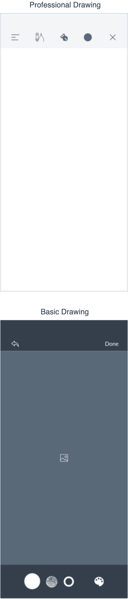
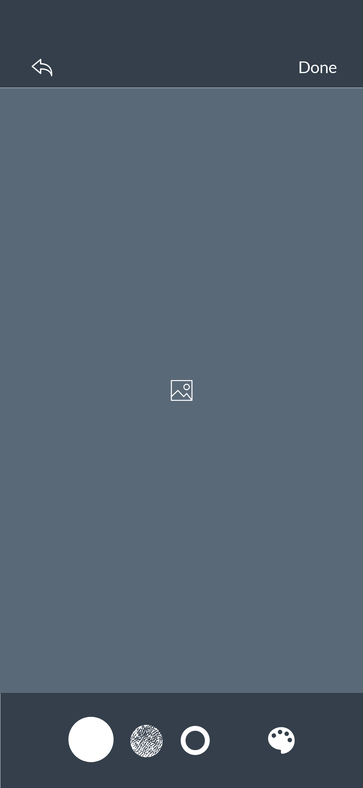

Drawing
드로잉 기능 제공
‘Drawing’ 태스크는 사용자가 터치 인터렉션을 활용하여 화면에 직접 드로잉을 할 수 있도록 기능을 제공하며 단일 페이지로 구성되어 있다. 전문성 정도에 따라 제공 기능이 상이하다.
활용 방법 →‘Drawing’ 태스크 화면 흐름

‘Drawing’ 태스크 화면 설계
전문가 드로잉 (Professional drawing)
엔터테인먼트 카테고리의 드로잉 서비스는 사용자가 드로잉 툴을 활용하여 하드카피 결과물과 질적으로 유사한 결과를 도출할 수 있도록 기능을 제공한다.

기본 제공 드로잉 (Basic drawing)
메모 서비스, 메시징 서비스, 소셜 네트워킹 서비스에서 사용자 간 커뮤니케이션을 위해 촬영된 이미지에 기본적인 드로잉 기능을 제공한다. 페인트 및 핸드 드로잉 질감의 선, 색상 선택 팔레트, 지우개 기능을 제공하며, 스트로크 굵기 변경 및 색상 선택 팔레트의 색상환 제공의 커스텀 기능을 제공한다.
